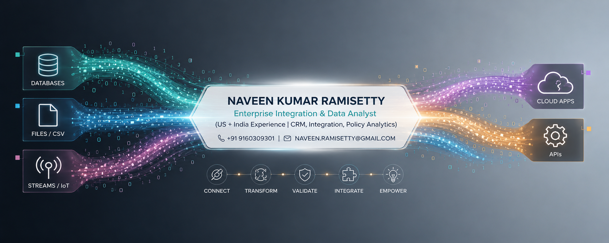

Enterprise
- Oracle SOA/BPEL, Oracle Integration Cloud (OIC)
- Siebel CRM, EAI, EIM, Oracle EBS
- B2B — EDI, cXML, RosettaNet, XML, XSLT
- Informatica, data migration, SQL Loader
- ERPNext
- Tableau, Metabase, Actuate, Excel

Returning to tech building with AI — 20+ years in enterprise applications, integration architecture, and data engineering across the US, India, Australia, and England.
View ProjectsI have 20+ years of experience in enterprise applications, integration architecture, CRM/ERP platforms, and data engineering. I worked in IT from 2003–2014 at Ciena and Infosys, then led social-impact research and policy analytics — and I am now setting up a personal learning environment to understand the AI ecosystem while building real apps.
My focus today: agents, skills, and markdown-based instruction files — paired with hands-on projects in Python, dashboards, and automation.
Domain experience includes telecom, banking, financial services, enterprise sales, and agricultural risk analytics.
Enterprise Integration & B2B Specialist (Order-to-Cash)
Clients: Goldman Sachs, Telstra, Toshiba, Capital One (US onsite)
What I am building in parallel — learning by shipping.
| Project | Description | Status |
|---|---|---|
| Fitness Tracking App | Log meals and workouts via natural language; get nightly summaries. | In progress |
| Portfolio Site | This site — a single-page resume and project showcase. | In progress |
| Farmer Suicides Documentation | Scrape newspapers to document and analyze farmer suicide reports. | Planned |
| Family Will Assistant | An assistant to help draft wills for family members. | Planned |
| Rental Property Management | Tools to manage rental properties and related workflows. | Planned |
No form in v1 — just links.